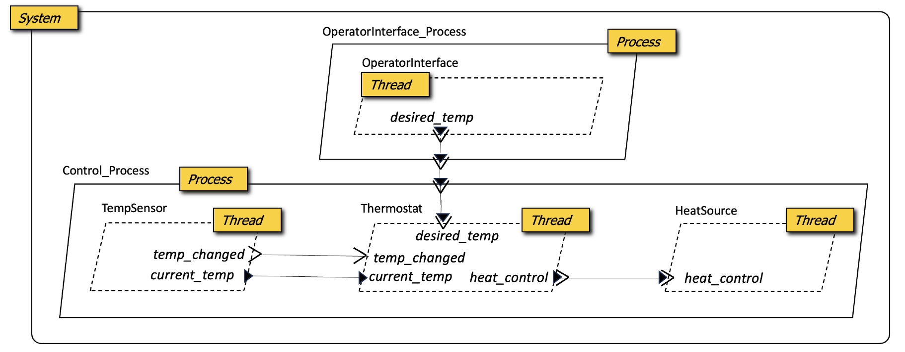
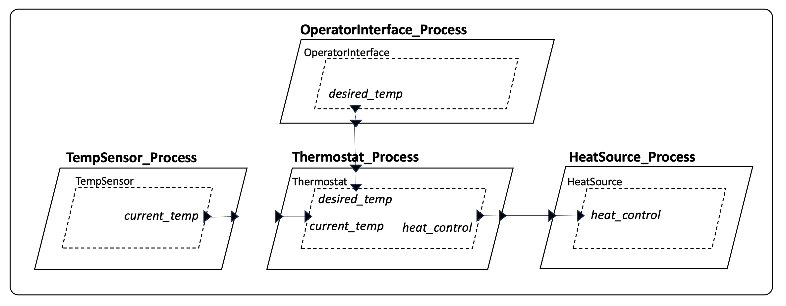
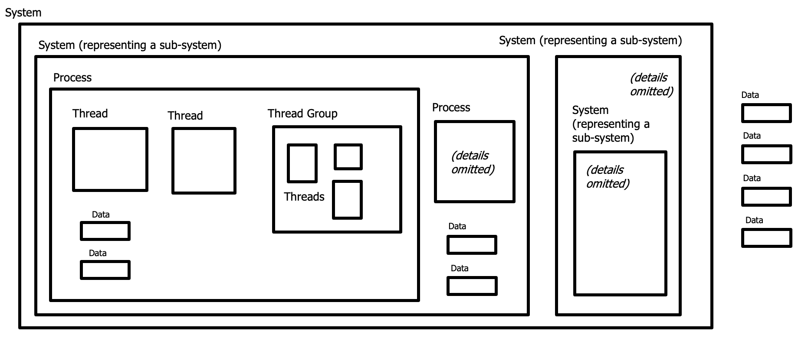

The HAMR GUMBO Contract Language
The Simple Isolette Example
The figure below presents the graphical view of the architecture of a simple system, called the “Simple Isolette” using AADL iconography.

The Simple Isolette is an infant (baby) incubator system, the purpose of which is to keep an infant an appropriate temperature in the first hours of its life. A TempSensor component senses the air temperature within the incubator enclosure which holds the infant. A Thermostat component implements control laws to turn the HeatSource on or off to keep the air temperature within a desired temperature range set by a nurse via the OperatorInterface.
Several variations of this example are used through the HAMR documentation and tutorials. This variant is constructed specifically to illustrate…
- the three different types of port-based communcation supported by HAMR (
event,data, andevent data), - the type different types of thread component supported by HAMR (
periodicandsporadic) - the typical hierachy of
system,process, andthreadcomponents.
We discuss each architectural feature of this example below, but here is the high-level intuition..
- the thread components represent the heart of the system computation.
- the
TempSensoris executed periodically (according to a period specified as a component property). Each time it is executed, it calls a hardware driver (not shown in the architecture) to retreive the current temperature value. It puts the current temperature value out itscurrent_tempdata port, and then sends a notification out itstemp_changedevent port indicating that an updated temperature reading is available. - the
OperatorInterfaceis executed periodically to retreive the most desired air temperature range input by the nurse. It combines the low bound and high bound for the temperature range into a single message which it then puts on itsdesired_tempoutput event data port. - The
Thermostatis a sporadic (event triggered) thread. It’s execution is triggered by the arrival of events on either thetemp_changedevent port or thedesired_tempevent data port. During execution, the arriving message is dequeued, then the thread gets the current temperature from its input data port, compares it to the desired temperature range, and puts out an On/Off message on its outputheat_controlevent data port. If the triggering message is adesired_tempfrom the operator interface, it also stores the most recent desired temperature settings in local state before computing the control laws and On/Off message. Thecurrent_tempvalue does not need stored in local state because it is always available for reading on the data port (data ports are not queued). - The
HeatSourceis an sporadic thread. Its execution is triggered by the arrival of aheat_controlmessage. Upon execution, the incoming message is dequeued and a lower-level driver is called to actuate the heat source appropriately.
- the
- Each of the
processcomponents representes a protected memory region in which threads may executed and maintain their local state. In this variant of the Simple Isolette, theTempSensor,Thermostat, andHeatControlthreads are all in one protected memory region, while theOperatorInteracethread is in a separate process. - A
systemcomponent aggregates the process components (along with some hardware components, not shown)
This example is termed “Simple” because it is a simplification of a more complex (full) Isolette system, which is also addressed in detail in HAMR documentation. The requirements and informal design of the full Isolette system were originally presented in the FAA Requirements Engineering Management Handbook – a technical report released by the FAA to document best-practices for requirements engineering.
A HAMR SysMLv2 textual model specification for the Simple Isolette corresponding to the graphical view above is presented below (a detailed discussion of the SysMLv2 syntax can be found in the chapter on SysMLv2 ToDo: fix cross reference.
package Isolette {
private import HAMR::*;
//=================================
// S y s t e m Definition
//=================================
part def Isolette_System :> System {
// --- implementation ---
// subcomponent instances
part operator_interface_process: OperatorInterface_Process;
part control_process : Control_Process;
connection dt : PortConnection connect operator_interface_process.desired_temp to control_process.desired_temp;
}
//=================================
// P r o c e s s Definitions
//=================================
part def OperatorInterface_Process :> Process {
// --- interface ---
port desired_temp : EventDataPort { out :>> type : Set_Points; }
// --- implementation ---
// thread subcomponent instances
part operator_interface: OperatorInterface;
connection dt : PortConnection connect operator_interface.desired_temp to desired_temp;
}
part def Control_Process :> Process {
// --- interface ---
port desired_temp : EventDataPort { in :>> type : Set_Points; }
// --- implementation ---
// thread subcomponent instances
part temp_sensor: TempSensor;
part thermostat: Thermostat;
part heat_source: HeatSource;
// --- connections ---
// interface connection to internal component
connection dt : PortConnection connect desired_temp to thermostat.desired_temp;
// internal connections
connection tc : PortConnection connect temp_sensor.temp_changed to thermostat.temp_changed;
connection ct : PortConnection connect temp_sensor.current_temp to thermostat.current_temp;
connection hc : PortConnection connect thermostat.heat_control to heat_source.heat_control;
}
//=================================
// T h r e a d Definitions
//=================================
part def TempSensor :> Thread {
// --- interface ---
port current_temp : DataPort { out :>> type : Temp; }
out port temp_changed : EventPort;
// properties
attribute :>> Period = 1000 [ms];
attribute :>> Dispatch_Protocol = Periodic;
}
part def OperatorInterface :> Thread {
// --- interface ---
port desired_temp : EventDataPort { out :>> type : Set_Points; }
// properties
attribute :>> Period = 1000 [ms];
attribute :>> Dispatch_Protocol = Periodic;
}
part def HeatSource :> Thread {
// --- interface ---
port heat_control : EventDataPort { in :>> type : On_Off; }
// properties
attribute :>> Dispatch_Protocol = Sporadic;
}
part def Thermostat :> Thread {
// --- interface ---
port current_temp : DataPort { in :>> type : Temp; }
in port temp_changed : EventPort;
port desired_temp : EventDataPort { in :>> type : Set_Points; }
port heat_control : EventDataPort { out :>> type : On_Off; }
// properties
attribute :>> Dispatch_Protocol = Sporadic;
}
//=================================
// D a t a Type Definitions
//=================================
part def Temp :> Struct {
degrees : Base_Types::Integer;
}
part def Set_Points :> Struct {
lower : Temp;
upper : Temp;
}
enum def On_Off {
enum On;
enum Off;
}
}
The current implementation of HAMR code generation for seL4 includes a HAMR model restriction that each Process component (corresponding to an seL4 Microkit protection domain) contain exactly one Thread component. This is due to way HAMR static component scheduling is currently implemented for seL4. HAMR also does not currently support sporadic components for seL4. (Note: we expect both of these restrictions to be lifted by the end of 2026).
A variant of the Simple Isolette that supports these restrictions is given below.

This variant of the architecture differs from the original one above in the following ways…
- Each process contains exactly one thread (HAMR seL4 code generation restriction)
- All threads are periodic (HAMR seL4 code generation restriction)
- All ports are data ports (HAMR does support
eventandevent dataports for seL4 as will be illustrated in other examples) - There is no
temp_changedevent to notify theThermostat. Instead, theThermostatwill simply poll thecurrent_tempdata port each time it is dispatched.
Note that HAMR models for seL4 are also accompanied by a static cyclic schedule (not shown) that gives the ordering of components. For example, for this architecture variant, an appropriate schedule would be OperatorInterface, TempSensor, Thermostat, OperatorInterface.
The notions of execution control (component dispatching) and port access are the main differences observable to the developer between this variant and the original one.
- the execution of the
OperatorInterfaceandTempSensorare similar to before. The key difference is that theTempSensordoes not put out atemp_changedevent. - When the
Thermostatis dispatched, it will poll both thecurrent_tempanddesired_tempdata ports, then compute the thermostat control logic to determine the appropriate On/Off command to be placed on theheat_controlport. - When the
HeatSourceis dispatched, it will poll theheat_controlport and then actuate the heat source appropriately.
HAMR code generation for seL4 ensures that each thread runs in a separate Microkit protection domain, indicated by the containing process for each thread – guarantee strong space and time partitioning for each thread.
HAMR Software Component Categories and Hierarchy
HAMR supports the following AADL component categories (“role” indicates the general purpose of the component within HAMR-built systems).
| Category | Role |
|---|---|
System |
Aggregates connected software and hardware components into a system or subsystem |
Process |
A protected address space with one or more threads |
Thread Group |
A logical aggregation of threads |
Thread |
A real-time task; a unit of schedulable computation |
Data |
Specifies data types to be used for port-based communication within the system |
Below are some aspects of AADL components that are not supported by HAMR…
- AADL includes
SubprogramandSubprogram Groupcomponents, which can be used to model procedure or method-level software architecture within threads, etc. HAMR doesn’t support these because (a) it enforces a common top-level method structure (a notion of “entry points”) within a thread (thus, there is no need for the developer to specify the method structure) and (b) the HAMR’s restricted approach simplifies formal specification, verification, and timing/scheduleability analysis. In the future, HAMR may add limited notions ofSubprogram(e.g., in passive components representing protected memory regions). - AADL
Datacomponents can also represent passive (non-threaded) data blocks shared between threads. HAMR doesn’t support this. It only usesDatacomponents for specifying data types, following the AADL Data Model Annex. - AADL
Devicecomponents represent scheduled driver software interfaces to hardware. In practice, there is little semantic difference from AADL threads, and so HAMR only supports AADLThreadcomponents.
Even though HAMR supports Thread Group, these are seldom used in HAMR examples.
Components definitions are given in packages in both AADL and SysMLv2. This enables defintions of component interfaces and properties to be shared and reused across systems.
A system is built from instances of components arranged in a hierarchy to reflect the logical structure of the deployed system. AADL has rules for the hierarchical arrangement of component instances. The figure below gives a visual depiction these.

- A
Systemcomponent may contain otherSystemcomponent instances (representing subsystems), and this nesting ofSystems can be repeated to an arbitrary depth. ASystemmay also includeProcesscomponent instances,Datacomponents (declaring data types), and hardware components (not shown). - A
Processcomponent contains one or moreThreadorThread Groupcomponent instances. - A
Thread Groupcontains one or moreThreadcomponent instances. - A
Threadcontains no component instances; EachThreadis a leaf node in an HAMR architecture (discussed in greater detail below).
Both the OSATE AADL editor and the HAMR SysMLv2 VSCode extension can check that models conform to these hierarchy rules (as well as other well-formedness condtions).
Common Aspects of Software Component and Connection Structure
The software components described above have the following characteristics in common…
- Component interfaces consisting of ports: Each component’s interface consists of zero or more ports, where each port is from one of the AADL port categories –
data,event, orevent dataport. Both SysMLv2 and AADL have other notions of interface features (e.g., AADL’ssubprogramcalls) that are not supported by HAMR. - Ports/connections are unidirectional: HAMR restricts ports to be unidirectional – they are classified as either
inorout. While AADL and SysMLv2 both allow bi-directional ports (in AADL,in outports), the HAMR restriction to uni-directional ports simplifies functional and information contract specification and verification. The bi-directional communication use cases that might be accomplished within outports can be achieved in HAMR using a pair of distinct ports (onein, the otherout). - Ports are typed:
dataandevent dataports have declared types, where the types are defined viadatacomponents following the approach originating in the AADL Data Model Annex (see the chapter of data type definitions ToDo: give cross reference.) - Component connections associate a source port with a destination port: When component interfaces are integrated by connecting their ports, each connection relates a source port (which originates the communicated event, message, or data) and a destination port (which consumes the communicated event, message, or data). Each source port may be connected to one or more destination ports (referred to as a “fan out” situation). However, only event and event data destination ports can be associated with more than one source port (“fan in”). Following the AADL standard, fan-in is not allowed for data ports because this can result in race conditions since data ports are non-queued.
- Well-formed connections: When component instances are integrated by connecting their ports, the ports on both sides of the connection must have the same port category (
event,data, andevent data) and equivalent types. This is more restrictive than AADL, which allows, e.g., anevent dataport to be connected to adata port. - Interfaces cannot be by-passed: SysMLv2 allows a part to make associations/connections with another part’s internal subparts, bypassing the enclosing part’s interface. HAMR follows AADL philosphy and restricts connections to only be given in terms of component/part interfaces.
AADL requirements component specifications to be given in two distinct declarations: a component type (i.e., a component “interface”) and a component implementation (which typically gives subcomponent structures as for non-leaf component categories including system, process and thread group). This emphasized the notation of an interface (somewhat analogous to interface in Java-like programming languages) which may have multiple conforming implementations from which instances are constructed (analogous to a Java class implementing an interface and then instances between created from the class using new). This forced separation often results in tedium for the developer since in the common situation of a component with only one implementation both declarations must be given. SysMLv2 does not force this distinction: both interface (a collection of port usages) and implementation (declaration of subcomponents and connections) can be written in a single SysMLv2 part definition. The notion of an interface with multiple implementations can be achieved using the native SysMLv2 inheritance mechanisms. Nevertheless, to emphasize the elements of the interface as distinct from the “implementation” aspects, HAMR encourages parts representing components to be organized and commented as follows with interface elements occuring at the top of the part definition.
part def Control_Process :> Process {
// --- interface ---
port desired_temp : EventDataPort { in :>> type : Set_Points; }
// --- implementation ---
// thread subcomponent instances
part temp_sensor: TempSensor;
part thermostat: Thermostat;
part heat_source: HeatSource;
// --- connections ---
// interface connection to internal component
connection dt : PortConnection connect desired_temp to thermostat.desired_temp;
// internal connections
connection tc : PortConnection connect temp_sensor.temp_changed to thermostat.temp_changed;
connection ct : PortConnection connect temp_sensor.current_temp to thermostat.current_temp;
connection hc : PortConnection connect thermostat.heat_control to heat_source.heat_control;
}
HAMR Component Categories
In the sections below, we given the informal semantics of each HAMR component category, along with intutition about how that category is represented via code generation for targetted platforms.
System
As defined in the AADL standard, “a system represents an assembly of interacting application software, execution platform, and system components”. A system component definition may contain system instances as sub-elements (representing subsystems).
For HAMR models, while there may be multiple system components defined (some representing subsystems, or some representing different architectures for the same system concept), analysis and code generation is performed with a selected root system component that contains all the information necessary to carry out the analysis or code generation. This will typically be the “top-level” system component, although there may be situations where an enclosing system is defined for informational purposes only (e.g., representing the context of the system to be analyzed for supported via code generation). The specific mechanism for selecting a root system component depends on the HAMR modeling language editor being used (e.g., the CodeIVE or OSATE). When HAMR analysis or code generation is invoked “headlessly” (without an IDE), command line options are available to indicate the root system. When there is a single system component defined in the given models, that component is the root system by default.
When a root system component is selected for HAMR, HAMR will generate an instance model for the system that “flattens” the architecture down to thread components (see ToDo: Cross reference later section). Typically, HAMR analyses and code generation are performed directly on the instance model since it contains that runtime structure of the system.
Given that system components will not be present instance models from which code is generated, they have no precise physical representation in the deployed system. Instead, allow conceptual boundaries to be specified for scoping of responsibilities, defining the boundaries of analysis or code generation, or scoping attributes that are “global” with respect to analysis or code generation.
ToDo: Give references to models in the HAMR example repository illustrating some of these aspects
Attributes
ToDo: list common attributes
Process
As defined in the AADL standard, “A process represents a virtual address space, i.e., it represents a space partition unit whose boundaries are enforced at runtime.”
| Platform | Interpretation |
|---|---|
| seL4 | Represents a “partition” in the kernel. For example, for seL4 Microkit, each model Process component instance causes an seL4 Microkit protection domain to be generated (actually, a tight nesting of two protection domains, one of which provides a thin hosting of another to more easily implement scheduling and error handling). |
| JVM | HAMR code generation currently implements a complete system in a JVM, which runs as a single OS process. Therefore, Process boundaries are effectively ignored when targetting the JVM for HAMR code generation. |
Attributes
ToDo: list common attributes
Thread Group
Thread
Data
Informal Semantics of Port Categories
Informal Semantics of Thread Dispatch and Port Interactions
The AADL standard indicates that a thread’s application code is organized into entry points (e.g., subprograms that are invoked from the AADL run-time). For example, the Initialize Entry Point is called during the system’s initialization phase, the Compute Entry Point is called during the system’s ``normal’’ compute phase. Other entry points are defined for handling faults, performing mode changes, etc. We plan to address the higher-level coordination semantics for these phases in follow-on work. Multiple organizations of entry points are allowed. Here, we address a single and for each thread.
Many of AADL’s thread execution concepts are based on long-established
task patterns and principles for achieving analyzeable real-time
systems (such as found in Burns and Wellings “Analysable Real-Time Systems”).
Burns and Wellings described these principles for Ada, but we implement similar notions in Slang and Rust. Following these principles, at each activation of a thread,
the application code of the thread (it’s Compute entry point)
will abstractly compute a function from its input port
values and local variables to output port values while possibly
updating its local variables.
In the general case, an AADL Thread may explictly call the AADL run-time services (RTS) to receive new inputs at any point in its execution. Yet, this would break the atomicity of a dispatch execution. We explictly forbid this in our formalization as this would introduce unsoundess in many AADL analyses and contract languages such as GUMBO. Furthermore, this capability is barely used in practice.
In AADL terminology, dispatching a thread refers to the thread becoming ready for execution from a OS scheduler perspective. The thread Dispatch_Protocol property selects among several strategies for determining when a thread should be dispatched. In HAMR, we consider only Periodic, which dispatches a thread when a certain time interval is passed, and Sporadic, which dispatches a thread upon arrival of messages to input ports specified as dispatch triggers.
In descriptions of HAMR’s semantics, the state of each port is further decomposed into the Infrastructure Port State (IPS) and the Application Port State (APS). The IPS represents the communication infrastructure’s perspective of the port; this is hidden from the thread application code. The APS represents the thread application code’s perspective of the port.
HAMR follows AADL and supports an input-compute-output model of communication and execution that is based on threads and port communication. To ensure determinism, the inputs received from other components are frozen at a specified point, by default the dispatch of a thread. As a result the computation performed by a thread is not affected by the arrival of new input unless the thread explicitly requests for input. Similarly, the output is made available to other components at a specified point in time.
The distinction between IPS and APS is used to represent AADL’s notions of port freezing and port variable. Typically, when a thread is dispatched, the component infrastructure uses the RTS to move one or more values from the IPS of input ports into the input APS. Then the component application code is called and the APS values then remain ``frozen’’ as the code executes. This provides the application a consistent view of inputs even though input IPS may be concurrently updated by communication infrastructure behind the scenes. The application code writes to the output APS throughout execution. Our intended design for this is that when the application code completes, the component infrastructure will call the Send Output RTS to move output values from the output APS to the IPS, thus releasing the output values all at once to the communication infrastructure for propagation to consumers. This release of output values is the key desired behavior. There are multiple possible implementations that achieve this behavior. At the component’s external interface, this execution pattern follows the (Read Inputs; Compute; Write Outputs) structure championed by various real-time system methods.
For input event data ports, the IPS typically would be a queue into which the middleware would insert arriving values following overflow policies specified for the port. For input data ports, the IPS typically would be a memory block large enough to hold a single value. For output ports, the IPS represents pending value(s) to be propagated by the communication infrastructure to connected consumer ports.